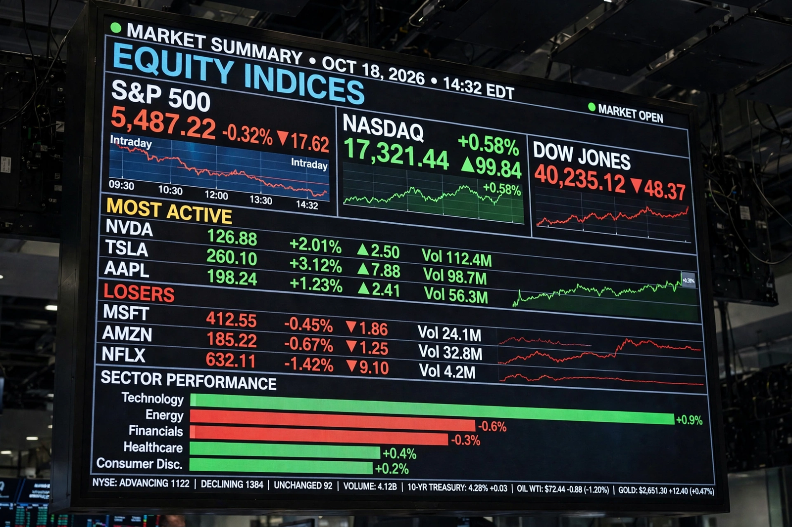

Latest
Markets data and business news lead Bloomberg

Bloomberg's homepage fuses its terminal heritage with news: live market data and charts sit beside reporting from its huge financial-news staff, Bloomberg Television and Businessweek.
Markets
Live data: stocks, currencies, crypto and commodities
Market-moving coverage is the core of the product.
Politics
Policy and elections through an economic lens
Bloomberg Politics coverage.
Technology
Big Tech, chips and startups
The technology desk's reporting.
Businessweek
Features from the magazine
Long-form business journalism.